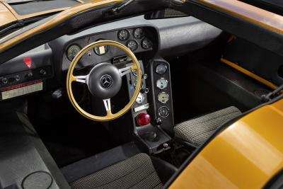
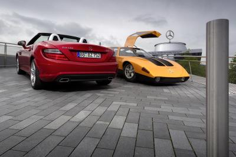
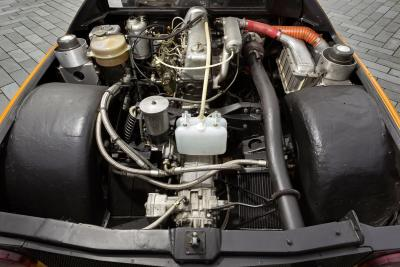

SLK 250 CDI
En tvåsitsig sportbil med dieselmotor!?
{kind=link}
Introduktionen av den nya Mercedes-Benz SLK 250 CDI markerar inte bara en fortsättning på företagets unika dieselmotorarv, utan bidrar också till att motverka en vanlig missuppfattning om att dieselmotorer och sportbilar är oförenliga.
{kind=link}
Den fyrcylindriga dieselmotorn levererar 150 kW (204 hk) från en cylindervolym på bara 2,2 liter. Sprinten från noll till hundra tar bara 6,7 sekunder – äkta sportbil prestanda. Bortsett från allt detta, är SLK 250 CDI den mest ekonomiska och därför mest miljöanpassade roadster i sitt segment. Det är nöjd med 4,9 liter diesel per 100 kilometer.
{kind=link}
Med dieselmotorn i SLK har Mercedes-Benz tagit nästa steg i en framgångsrik strategi som inleddes 1936 med 260 D-modellen -Världens allra första dieseldrivna bil. Världens äldsta motortillverkaren har fortsatt att utveckla dessa robusta och ekonomiska motorer sedan dess och, så långt tillbaka som mitten av 1970-talet kunde de visa hittills oupptäckta egenskaper som högpresterande legendariska C111- II D och C111-III. Den nya Mercedes-Benz SLK 250 CDI är den logiska efterföljaren till dessa lysande förfäder.

En viss tröghet har accepterats som en egenskap hos dieselmotorn sedan Mercedes-Benz installerade en i världens första dieseldrivna personbilar 1936. Så fel. 40 år senare började ingenjörer arbetar för att titta närmare på prestanda, potential och sparsamma motorer med kompressionständning – och snart upptäckte de vad de letade efter. De monterade en turbo på en standard 80 hk femcylindrig motor som finns i 240 D 3,0 och 300 D-modeller för att framkalla imponerande 190 hk från 3-liters diesel.
{kind=link}

Med denna kraftfulla dieselmotor under huven på en spektakulärt utformad måsvinge modell, målad i lysande orange, var nu Mercedes-Benz laddade för några rekord. På Nardo-banan i södra Italien 1976. Under en hel timme, cirklade den snabba spåret med en hastighet av 253,770 km/h. De fortsatte med att samla in ytterligare rekord i alla kategorier – över avstånd på 10 till 10.000 kilometer och under perioder av 6 till 24 timmar.
{kind=link}

Ingen hade trott att ett dieselfordon var kapabel till prestationerna.
I april 1978, satte de ett nytt rekord en timme med en medelhastighet på 320 km/t. Inga andra dieseldrivna fordon hade någonsin ens kommit i närheten av sådana hastigheter. Med alla dessa imponerande rekord kunde de, en gång för alla, bevisa tillförlitligheten och effektiviteten i turbodiesel motorn.
Trots dessa rekord gick den fortsatta utvecklingen av turbodiesel snabbt. Detta arbete ledde 1978 till lanseringen av de 300 SD, världens första dieselbil med avgasturbo.
Under 1997 inledde Mercedes-Benz en ny era inom dieseltekniken med C 220 CDI. Detta var den första serietillverkade personbil att presenteras med en dieselmotor med common rail direktinsprutning. Denna nya teknik gav bilen en betydligt högre prestanda och extra vridmoment, samtidigt som sätter nya standarder inom bränsleförbrukning och utsläpp.
Att Mercedes-Benz nu för första gången erbjude den sportiga SLK roadstern med en dieselmotor är nästa logiska steg i denna utveckling. Dess fyra-cylindriga dieselmotor med cylindervolym på 2143 cc, levererar 150 kW (204 hk) med tillgängliga vridmoment på 500 Newtonmeter – lika mycket som en bensindriven motor med mer än två gånger så stor cylindervolym normalt erbjuder. Den nya SLK 250 CDI erbjuder den mest kraftfulla dieseln i denna klass, med en kraft som driver Roadster till en mycket sportig prestanda.
Standardutrustad med 7G-Tronic PLUS automatisk växellåda (en sex-växlad manuell växellåda kommer under det andra kvartalet nästa år). Dessutom är flexibiliteten i SLK 250 CDI inget annat än fenomenal. Tack vare sitt enorma diesel vridmoment accelererar den från 80 till 120 km/t på bara 4,3 sekunder – den bästa siffran i klassen, vilket leder till säkra och smidiga omkörningar.
Bortsett från allt detta, är SLK 250 CDI den mest ekonomiska och därför den mest miljöanpassade bilen i sitt segment.
{kind=link}
{kind=link}
Den är nöjd med 4,9 liter diesel per 100 kilometer, vilket motsvarar CO2-utsläpp på 128 g/km. Med andra ord, kombinerar diesel SLK fullblods prestanda med bränsleförbrukning jämförbar med en sub-kompakt. Detta garanterar enkelt överlägen körglädje med stor bränsleeffektivitet.
Dieselmotorn når sin exemplariska effekt, vridmoment, bränsleförbrukning och utsläpp, liksom dess mycket imponerande jämnhet för en dieselmotor, tack vare en serie av innovativa teknologier. Dessa inkluderar fjärde generationens common rail-insprutning med exakta insprutningstider, liksom steg två turboladdning. Liksom alla SLK modeller är SLK 250 CDI standard med en ECO start/stopp-system.
Den sparsamma bränsleförbrukning gör SLK 250 CDI till en bil med överlägsna långväga kvaliteter. Det är fullt möjligt att köra non-stop från Nordsjön hela vägen till en strand vid Medelhavet. Mycket bekväma sportstolar, en komfortabel fjädrings setup och den största lastkapaciteten i detta segment drar också sitt strå till stacken för att skapa rätt förutsättningar.
Eftersom den delar samma gener med de andra medlemmarna i den framgångsrika SLK familjen, kombinerar SLK 250 CDI lättfotad sportighet med elegant komfort, en slående sportbils design och absolut lämplighet för varjedags användning, samtidigt levereras högsta prestanda med exemplarisk ekologi. Detta innebär att diesel-versionen också, ger köra öppet njutning på en utomordentligt hög nivå.
Likaså är SLK 250 CDI också tillgänglig med ett val av tre versioner av det berömda Vario-taket – ett av dem panoramautsikt Vario-tak med Magic SKY KONTROLL. Detta glastak kan ändras från ljust till mörkt med en knapptryckning. Det finns också tre fjädrings varianter: en konventionellt stål fjädring, ett sportchassi med styvare fjädring och stötdämpare och en med en elektroniskt styrd helautomatiskt dämpningssystem.
{kind=link}
Exteriört är den nya SLK 250 CDI inte annorlunda i utseende från bensinmodellerna. Den har även det dubbla avgassystemet, och också därför samma fantastiska utseende som alla SLK modeller är kända för.
SLK 250 CDI visar hur mycket Mercedes-Benz har uppnått med dieselmotorn. En jämförelse av världens allra första dieselbil Mercedes-Benz 260 D 1936, med den nya diesel Roadstern, avslöjar häpnadsväckande utveckling. 260 D behövde 0,3 liter bränsle per kilowatt per 100 kilometer, medan SLK 250 CDI kräver endast 0,03 liter – bara en tiondel. Vi ser samma bild när det gäller effekt-volymförhållandet: förfadern till alla dieselbilar, 260 D, genererade 17,7 hk från en liter cylindervolym, medan familjens senaste avkomma, SLK 250 CDI, producerar 95,1 hk – mer än fem gånger den siffran. SLK 250 CDI visar således att dieselmotorn fortfarande innehar anmärkningsvärda potential för framtiden.